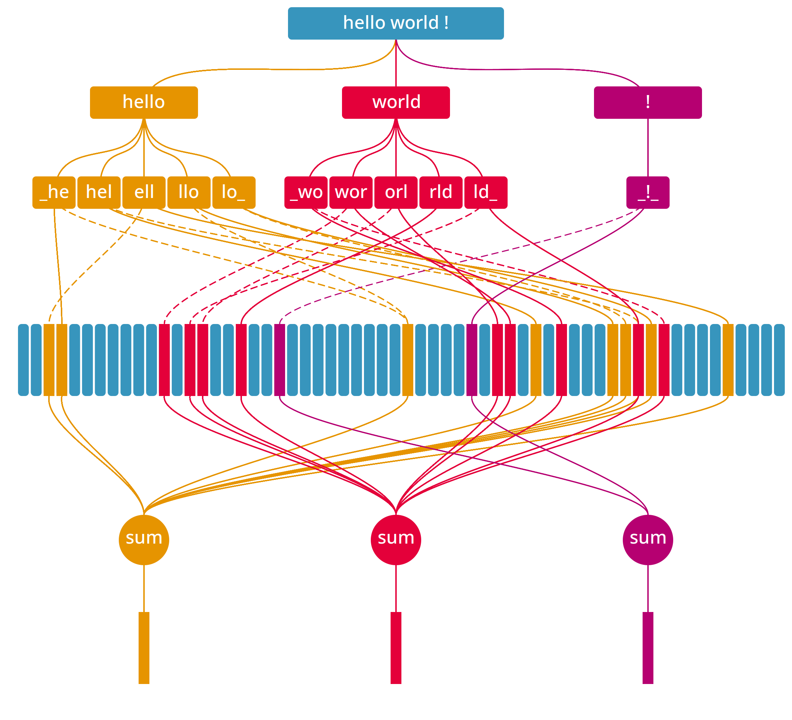

T-Free: Sparse Embedding Representations
The Challenge of Classical Embeddings
In their work, the authors address several issues with classical embedding representations, which are typically built using tokenizers like Byte Pair Encoding or Unigram , combined with a parameter matrix that maps tokens to their corresponding embedding representations. Among these issues, the following are particularly relevant:
- Recently, the number of parameters allocated for embeddings has become exceedingly large, consuming a significant portion of memory.
- The authors note that classical tokenizers may reserve space for nearly duplicate tokens, resulting in inefficient use of memory.
- Many tokens appear so infrequently that they fail to learn meaningful representations, leading to hallucinations when used.
Method
The authors propose a method for both text encoding and decoding to address these issues. Let's begin with the encoding process:
Text Encoding
Firstly, let me draw a figure to illustrate the encoding process:
Let's introduce an embedding matrix \(E \in \mathbb{R}^{v \times d}\) (in the figure this is represented by vertical rectangle). This matrix consists of trainable parameters and typically maps tokens to their embedding representations. However, in this approach, each row will represent a different object, which will become clear later.
Next, we use a whitespace tokenizer to split the sentence into tokens. For example, the sentence "Hello world !" would be tokenized into ["Hello", "world", "!"].
Additionally, we append a special character at the start and end of each token. Thus, the sentence "Hello world !" becomes ["_Hello_", "_world_", "_!_"]. This step probably helps the model learn the boundaries of each token.
Next, we convert each token into a trigram list. For example, the token "_Hello_" is transformed into ["_He", "Hel", "ell", "llo", "lo_"].
We then map each trigram to a set of indices for the embedding matrix. The number of indices, denoted as \(m\), can be considered a hyperparameter. Each index is computed using a hash (we need \(m\) hash functions) function modulo the \(v\) rows in the embedding matrix. In the figure, we use two hash functions, one represented by a continuos line, and the other by a dashed line. For example, the trigram "_He" might be mapped to the indices [0, 32, 66].
Finally, we sum the embeddings of the indices to obtain the final embedding representation of the token. These are represented in the bottom level of the figure.
Ultimately, from our sentence "Hello world !" we would go through the following steps:
- Start:
"Hello world !" - Tokenize:
["Hello","world","!"] - Append:
["_Hello_","_world_","_!_"] - Trigram:
[["_He",...,"lo_"],[...],[...]} - hash & modulo:
[[[0,32,66],...,[6,21,12]],[...],[...]] - aggregate:
[E[0]+E[32]+E[66]+...+E[6]+E[21]+E[12],...,...]
If a word has \(n\) trigrams and we use \(m\) indices per trigram (or, \(m\) hashes per trigram), the resulting embedding is the sum of \(nm\) embeddings from the matrix \(E\).
With some simplification (mainly regarding the tokenization step), we can express the function that performs steps 1 through 5 as follows:
def token2indices(token, num_embeddings, hashes):
trigrams = [token[i:i+3] for i in range(len(token)-2)]
indices = [[hash(tri) % num_embeddings for hash in hashes] for tri in trigrams]
return indices
def sentence2indices(sentence, num_embeddings, num_hashes):
hashes = [lambda x, i=i: hash((x, i)) for i in range(num_hashes)]
tokens = [f"_{token}_" for token in sentence.split()]
return [token2indices(token, num_embeddings, hashes) for token in tokens]
The final step involves summing all the embeddings corresponding to the indices of the same token. Ultimately, this process ensures that similar tokens will end-up having similar embeddings.
Additionally, we can pre-compute the indices for each token. During training, we simply map each token to its pre-computed indices and sum the corresponding embeddings.
Text Decoding
Before introducing the decoding algorithm, it is helpful to use a different representation than the list of indices we used previously. Specifically, we can use a sparse vector to represent the same information. For example, here is the function that maps a word to its sparse representation:
def token2sparse(token, num_embeddings, hashes):
sparse = [0] * num_embeddings
for trigram in [token[i:i+3] for i in range(len(token)-2)]:
for h in hashes:
sparse[h(trigram) % num_embeddings] = 1
return sparse
Note that the resulting sparse vector is mostly a zero-vector, except for the \(nm\) entries (where \(n\) is the number of trigrams and \(m\) is the number of indices) corresponding to the indices of the token. We can think of this sparse representation as an activation vector for the matrix \(E\).
We start with an embedding representation \(x \in \mathbb{R}^{1 \times d}\). This representation could result from several transformer layers or any other architecture. In any case, our goal is to decode it back to a word.
We multiply \(x\) with the transpose of the embedding matrix \(E^T\) (\(s = xE^T \in \mathbb{R}^{1 \times v}\)), similar to the classical approach. This results in a logit vector, which indicates how much the representation \(x\) attends to each embedding in \(E\). The authors then apply a sigmoid function to the logits to normalize each activation to the range \([0,1]\).
Next, the authors multiply the sparse word activation matrix \(A \in \mathbb{R}^{V \times v}\) by the score vector \(s\), resulting in \(z = A\sigma(s) \in \mathbb{R}^{V \times 1}\). Here, \(V\) represents the number of possible words we can decode to (in other words, the vocabulary size). Each entry in \(A\) corresponds to a word and is essentially the sparse representation associated with that word; you can think of it as the output of the function token2sparse.
The final step is to normalize the resulting vector \(z\). The authors first divide each entry by the sum of all entries to normalize it. Then, they apply a softmax function to obtain the final probability distribution over the vocabulary.
Next, the decoding can be performed by selecting the word with the highest probability or by using an alternative decoding technique.
Intuitively, this means that words which activate \(E\) in a manner similar to \(x\) will have a higher probability of being chosen.
Training Objective
The authors also use the multi-label binary cross-entropy loss. This is likely intended to encourage the network to activate the embeddings corresponding to the correct word. However, in principle, this framework could also work with traditional categorical cross-entropy loss.
Review
The work is extremely interesting, though the presentation can be somewhat difficult to follow, especially in the text decoding section. It fundamentally challenges our understanding of embeddings by proposing an innovative alternative that effectively addresses many of the issues associated with the classical approach.
Nonetheless, their work presents a few, I would say, oddities, particularly during the decoding phase. For instance, why do the authors apply two different normalizations during decoding (dividing by the sum of entries and then applying softmax)? Additionally, while the authors claim their approach is tokenizer-free, a whitespace tokenizer is still used. It might be more accurate to describe it as a training-free tokenizer. The decoding scheme is also somewhat more complex than one might expect. For example, why do the authors not directly multiply the vector representation (previously \(x\)) with each word embedding? Perhaps this choice is made to not materialize the full word-embedding matrix, but it would have been an interesting ablation experiment.